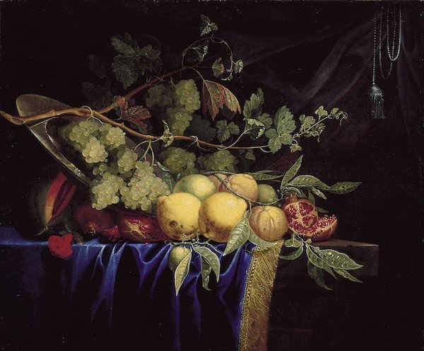

A Splash In Paint
True blue, royal blue, ultramarine: During the Renaissance, these were all names for the most prized of all pigments, lazurite, derived from the semiprecious mineral lapis lazuli. Mined and processed since the sixth century almost exclusively in Afghanistan, and imported to European markets through Venice, it was worth more than five times its weight in gold. It was used sparingly, often reserved for the richest patrons by the most prosperous artists.
Royal Blue

Look at this sumptuous still life, for example, painted in mid-17th-century
Paris by Paul Liegeois, which features his signature royal blue drapery.
He achieved the effect with thin glazes of ultramarine oil paint applied
over a layer that was highlighted with white lead. When light penetrates
the thin blue glaze, the white reflects it back, intensifying a deep blue hue.
We often take for granted the dazzling range of colors in old oil paintings as we stroll through an art museum. Early Renaissance panels are full of jewel-like shades. Mannerists like Bronzino used shocking, acidic color combinations as they stretched the limits of naturalistic representation. Grand Baroque era artists, like Caravaggio, set vivid hues against dramatic dark shadows. In truth, these colors were hard-won. Time-tested, layer-by-layer techniques were required to ensure that a limited range of natural colors would maximize their visual impact. Creating a colorful oil painting was not yet the spontaneous act we envision the likes of Monet performing as he captured fleeting light and color effects.
Getting The Blues

When we talk about the “Blue Period” of an artist, then one name inevitably comes to mind: Pablo Picasso, the Spanish wunderkind of the art world, who developed his first independent style at just 20 years old and who revealed a propensity towards a melancholy mood – his “Blue Period” (1901-1904), for example, focuses primarily on subjects of human misery – that later lifted with the advent of his “Rose Period” around 1905/06.
In the same way Joan Miró wanted to avoid setting out a specific artistic style, he also frequently switched color palettes. Blue, however, was to play a significant role in his career, as his blue “dream paintings” (1925-1927) consolidated Miró’s fame and the color accompanied him through decades of creativity.
Another “master of blue coloration” is Yves Klein who, after marveling at the blue of the frescoes in the Basilica at Assisi on a trip to Italy, began working on his first monochrome paintings. It was from this that the so-called “monochromes” developed, which he increasingly produced in monochrome ultramarine-blue. In 1960 Klein even had this color patented under the label “International Klein Blue (I.K.B.)”.